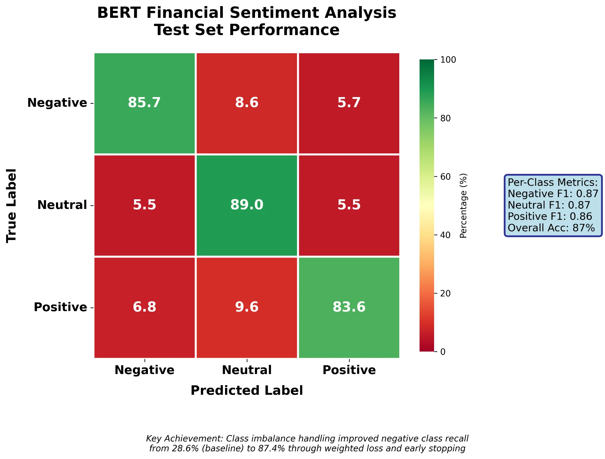

Physics Student Studying Machine Learning & Building Projects
I'm a physics student in London working across mathematics, physics, and machine learning. I implement algorithms from scratch, compete on Kaggle, and build production ready projects with a focus on technical rigor over surface level implementation.
I'm a Physics student at Queen Mary University of London (QMUL), interested in the overlap between maths, physics, machine learning, and quantitative finance. I like turning theory into code and using models to explain or predict real things in the world.
I learn by building: small ML experiments, larger end-to-end projects, Kaggle competitions, and hackathons. Recent work includes a heat-pump explainer, a financial-news sentiment model using BERT, and an investment-framework project that combines data analysis with portfolio reasoning.
Outside of projects, I'm involved with the QMUL Machine Learning Society, especially the quant side—talking trading ideas, sharing notebooks, and working on collaborative builds. Long-term I'm aiming for ML/quant roles; short-term I'm focused on shipping more projects and deepening my understanding of the maths and code behind them.
Dedicated to mastering Machine Learning through consistent practice, building real projects, and understanding the underlying principles.
Developing a machine learning model that uses physics-informed neural networks to solve partial differential equations relevant to physics problems. This approach integrates physical laws directly into the neural network architecture, enabling the model to respect domain knowledge while learning from data. Currently focusing on training stability, boundary condition handling, and expanding to more complex PDE systems.
A collection of focused experiments and mini-projects designed to build core ML intuition. Covers fundamental techniques including regression, classification, feature engineering, and model evaluation across various datasets. Each project serves as a learning rep to reinforce understanding of core machine learning concepts.
An educational hackathon project that explains heat pump technology clearly for non-technical audiences, combining physics principles with computational modelling and visualisation. Built interactive demonstrations and clear explanations to make complex thermodynamics accessible.
A quantitative investment strategy framework built for the UK Investment Challenge 2025. Designed a complete portfolio data pipeline with performance metrics and risk analysis. Includes comprehensive documentation and systematic approach to quantitative asset analysis.
Fine-tuned BERT model (110M parameters) on 5,842 financial news headlines labeled as positive, negative, or neutral. Achieved 87% test accuracy with balanced F1 scores across all sentiment classes. Improved negative class recall from 28.6% to 85.7% through weighted loss functions and early stopping, demonstrating strong performance on previously underperforming class.

Team Member
Team Lead
Active Member
Active participant in Machine Learning Society's quantitative finance division. Engaging in discussions on quantitative trading strategies, machine learning applications in finance, and collaborative projects.
Bachelor of Science in Physics
Skills gained from studying Physics include mathematical modelling, computational methods, problem-solving, and analytical thinking.
Mathematics, Further Mathematics, Physics
Completed A Levels in Mathematics, Further Mathematics, and Physics, building a strong foundation in quantitative and analytical skills.
4 Grade 8s, 3 Grade 7s, 2 Grade 6s
Completed GCSEs with strong results across multiple subjects.